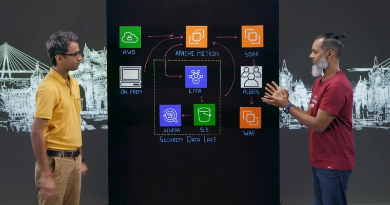
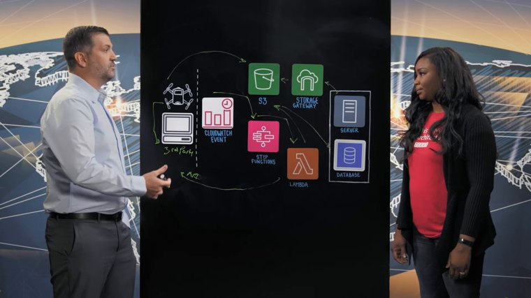
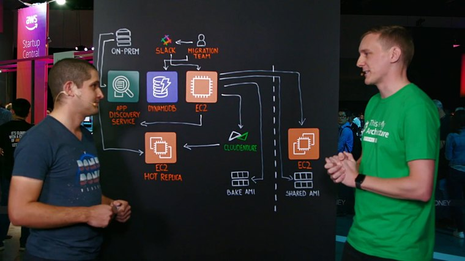
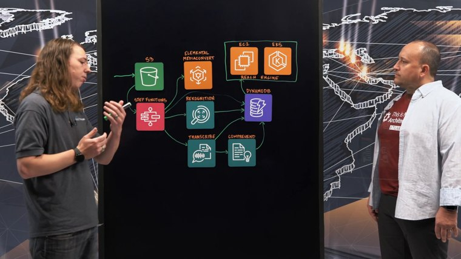
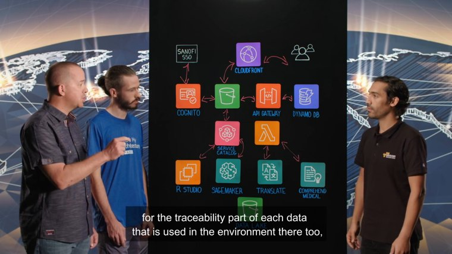
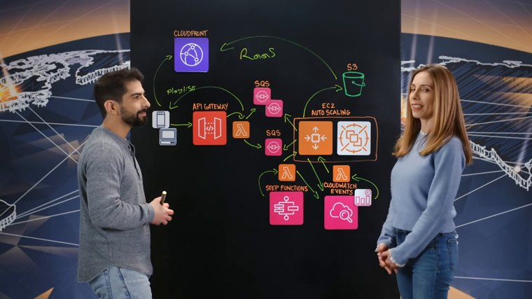
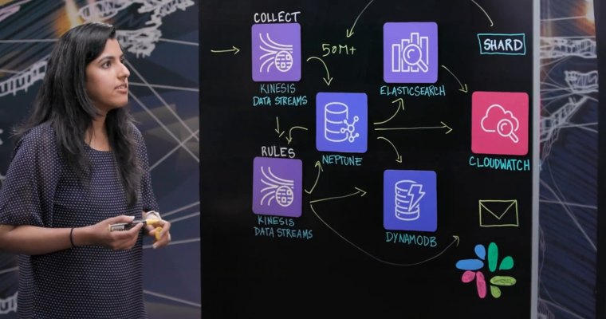
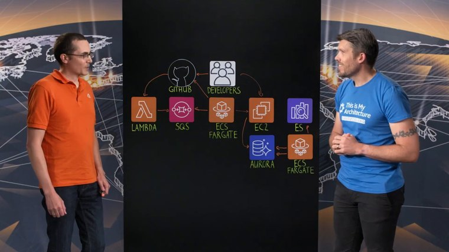

El modelo conectó dos servicios que el anotador humano sí vio, con una arista que no está ni en su lectura ni en el ground truth. Son las únicas candidatas a error de percepción genuino: las otras 80 divergencias ya tienen causa identificada. Condición: Parsimonious sin transcript (sin audio, igual que la lectura humana).

¿Se ve en la pizarra alguna de estas conexiones?
OnPremDC → EC2VPC → EC2EC2 → EMREC2 → EC2S3 → EC2entidades: AWS[VPC], On-Prem[OnPremDC], Apache Metron[ThirdParty], SOAR[EC2], alerts[UserCompanyAnalyst], WAF[WAF], EMR[EMR], S3(2)[S3], Athena[Athena]
conexiones: AWS→Apache Metron · alerts→Apache Metron · On-Prem→Apache Metron · Apache Metron→SOAR · SOAR→alerts · alerts→WAF · Apache Metron→EMR · EMR→S3(2) · S3(2)→Athena

¿Se ve en la pizarra alguna de estas conexiones?
ThirdParty → S3ThirdParty → CloudWatchentidades: DRONE[UserCompanyDrone], THIRD PARTY[ThirdParty], S3[S3], STORAGE GATEWAY[StorageGateway], SERVER[EC2], DATABASE[RDS], CLOUDWATCH EVENTS[CloudWatch], STEP FUNCTIONS[StepFunctions], LAMBDA[Lambda]
conexiones: DRONE→THIRD PARTY · DRONE→S3 · STORAGE GATEWAY→S3 · SERVER→STORAGE GATEWAY · S3→SERVER · CLOUDWATCH EVENTS→STEP FUNCTIONS · STEP FUNCTIONS→LAMBDA · LAMBDA→THIRD PARTY

¿Se ve en la pizarra alguna de estas conexiones?
ThirdParty → DynamoDBentidades: ON-PREM[OnPremDC], APP DISCOVERY SERVICE[AppDiscovery], EC2 (HOT REPLICA)[EC2], MIGRATION TEAM[UserCompanyDeveloper], SLACK[ThirdParty], EC2 (5)[EC2], CLOUDENDURE[ThirdParty], BAKE AMI[AMI], DYNAMODB[DynamoDB], EC2 (Lado Derecho)[EC2], SHARED AMI[AMI]
conexiones: ON-PREM→APP DISCOVERY SERVICE · ON-PREM→EC2 (HOT REPLICA) · MIGRATION TEAM→SLACK · MIGRATION TEAM→DYNAMODB · SLACK→EC2 (5) · EC2 (5)→APP DISCOVERY SERVICE · EC2 (5)→CLOUDENDURE · EC2 (5)→BAKE AMI · EC2 (5)→EC2 (Lado Derecho) · EC2 (5)→SHARED AMI · CLOUDENDURE→EC2 (HOT REPLICA)

¿Se ve en la pizarra alguna de estas conexiones?
MediaConvert → DynamoDBentidades: S3[S3], STEP FUNCTIONS[StepFunctions], ELEMENTAL MEDIACONVERT[MediaConvert], REKOGNITION[Rekognition], TRANSCRIBE[Transcribe], COMPREHEND[Comprehend], DYNAMODB[DynamoDB], EC2[EC2], EKS[EKS]
conexiones: S3→STEP FUNCTIONS · STEP FUNCTIONS→ELEMENTAL MEDIACONVERT · STEP FUNCTIONS→REKOGNITION · STEP FUNCTIONS→TRANSCRIBE · STEP FUNCTIONS→DYNAMODB · REKOGNITION→DYNAMODB · TRANSCRIBE→DYNAMODB · TRANSCRIBE→COMPREHEND · COMPREHEND→DYNAMODB · DYNAMODB→EC2

¿Se ve en la pizarra alguna de estas conexiones?
ApiGateway → Lambdaentidades: SANDFI SSO[ThirdParty], Amazon Cognito[Cognito], Amazon S3 (1)[S3], Amazon CloudFront[CloudFront], User[UserConsumerWeb], Amazon API Gateway[ApiGateway], Amazon DynamoDB[DynamoDB], AWS Service Catalog[ServiceCatalog], RStudio (EC2)[EC2], Amazon SageMaker[SageMaker], AWS Lambda[Lambda], Amazon Translate[Translate], Amazon Comprehend Medical[Comprehend], Data Lake[S3]
conexiones: SANDFI SSO→Amazon Cognito · Amazon Cognito→SANDFI SSO · Amazon Cognito→Amazon S3 (1) · Amazon S3 (1)→Amazon Cognito · Amazon S3 (1)→Amazon CloudFront · Amazon CloudFront→Amazon S3 (1) · Amazon CloudFront→User · User→Amazon CloudFront · Amazon S3 (1)→Amazon API Gateway · Amazon API Gateway→Amazon S3 (1) · Amazon API Gateway→Amazon DynamoDB · Amazon DynamoDB→Amazon API Gateway · Amazon S3 (1)→AWS Service Catalog · AWS Service Catalog→Amazon S3 (1) · AWS Service Catalog→RStudio (EC2) · RStudio (EC2)→AWS Service Catalog · AWS Service Catalog→Amazon SageMaker · Amazon SageMaker→AWS Service Catalog · AWS Lambda→Amazon Translate · Amazon Translate→AWS Lambda · AWS Lambda→Amazon Comprehend Medical · Amazon Comprehend Medical→AWS Lambda

¿Se ve en la pizarra alguna de estas conexiones?
StepFunctions → CloudWatchentidades: PHONE OR COMPUTER[UserConsumerWebMobile], CLOUDFRONT[CloudFront], S3[S3], API GATEWAY[ApiGateway], LAMBDA (INGEST)[Lambda], SQS (BOTTOM)[SQS], SQS (TOP)[SQS], EC2 AUTO SCALING[AutoScaling], STEP FUNCTIONS[StepFunctions], LAMBDA (STEP FUNCTIONS)[Lambda], CLOUDWATCH EVENTS[CloudWatch], LAMBDA (CLOUDWATCH EVENTS)[Lambda]
conexiones: S3→CLOUDFRONT · PHONE OR COMPUTER→CLOUDFRONT · PHONE OR COMPUTER→API GATEWAY · API GATEWAY→LAMBDA (INGEST) · LAMBDA (INGEST)→PHONE OR COMPUTER · LAMBDA (INGEST)→SQS (TOP) · LAMBDA (INGEST)→SQS (BOTTOM) · EC2 AUTO SCALING→SQS (TOP) · SQS (BOTTOM)→EC2 AUTO SCALING · EC2 AUTO SCALING→S3 · STEP FUNCTIONS→LAMBDA (STEP FUNCTIONS) · LAMBDA (STEP FUNCTIONS)→EC2 AUTO SCALING · LAMBDA (STEP FUNCTIONS)→CLOUDWATCH EVENTS · CLOUDWATCH EVENTS→LAMBDA (CLOUDWATCH EVENTS) · LAMBDA (CLOUDWATCH EVENTS)→EC2 AUTO SCALING · EC2 AUTO SCALING→CLOUDWATCH EVENTS

¿Se ve en la pizarra alguna de estas conexiones?
CloudWatch → KinesisDataStreamentidades: COLLECT (KINESIS DATA STREAMS)[KinesisDataStream], RULES (KINESIS DATA STREAMS)[KinesisDataStream], NEPTUNE[Neptune], ELASTICSEARCH[OpenSearch], CLOUDWATCH[CloudWatch], DYNAMODB[DynamoDB], NOTIFICATIONS (SLACK / EMAIL)[ThirdParty]
conexiones: COLLECT (KINESIS DATA STREAMS)→RULES (KINESIS DATA STREAMS) · COLLECT (KINESIS DATA STREAMS)→NEPTUNE · RULES (KINESIS DATA STREAMS)→NEPTUNE · RULES (KINESIS DATA STREAMS)→DYNAMODB · RULES (KINESIS DATA STREAMS)→NOTIFICATIONS (SLACK / EMAIL) · NEPTUNE→ELASTICSEARCH · NEPTUNE→CLOUDWATCH · NEPTUNE→DYNAMODB · ELASTICSEARCH→CLOUDWATCH

¿Se ve en la pizarra alguna de estas conexiones?
ThirdParty → SQSentidades: developers[UserCompanyDeveloper], github[ThirdParty], lambda[Lambda], SQS[SQS], ECS Fargate (1)[Fargate], Ec2[EC2], Auaroa[Aurora], ECS fargate (2)[Fargate], ES[ThirdParty]
conexiones: developers→github · developers→Ec2 · github→lambda · lambda→SQS · ECS Fargate (1)→SQS · ECS Fargate (1)→Ec2 · ECS Fargate (1)→github · Ec2→Auaroa · ECS fargate (2)→Auaroa · ECS fargate (2)→ES